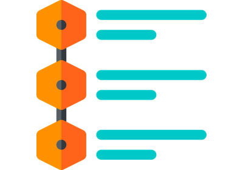
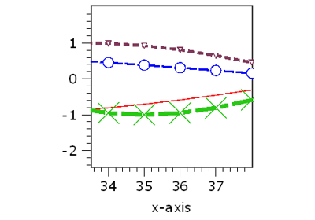

12.1.10.5. Plots# Interactive shape picker Interactive shape picker Pick points and markers Pick points and markers Auto-update plot Auto-update plot Contourlines 2D plot Contourlines 2D plot Datetime Datetime  1D Legend title 1D Legend title  1D Line properties 1D Line properties Plot style sheets Plot style sheets Shapes Shapes Shape transformation Shape transformation VTK 3D Visualizer VTK 3D Visualizer Cloud and mesh visualization Cloud and mesh visualization Colored shapes Colored shapes Draw and transform shapes Draw and transform shapes Draw markers Draw markers Draw pickers 1D plot Draw pickers 1D plot Figure positioning Figure positioning Plot line cut, volume cut, through z-stack Plot line cut, volume cut, through z-stack Mask editor Mask editor Plot 2.5D/ 3D Plot 2.5D/ 3D Plot XY Plot XY